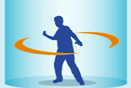

2 |
Consignes d’utilisation |
 |
|
| AVERTISSEMENT – Blessure causée par des problèmes préexistants. |
Jouer avec la Wii Balance Board pourrait nécessiter différents degrés d’activité physique. Consultez un médecin avant d’utiliser la Wii Balance Board si :
- Vous êtes ou pourriez être enceinte;
- Vous avez des problèmes respiratoires, des problèmes de coeur, de dos, d’articulations ou d’autres problèmes orthopédiques;
- Vous avez une pression artérielle élevée;
- Vous avez de la difficulté à faire des exercices physiques; ou
- Si vous avez été avisé(e) de limiter vos exercices physiques.
Lors de l’utilisation de la Wii Balance Board, ARRÊTEZ IMMÉDIATEMENT L’UTILISATION et consultez un médecin si vous éprouvez une fatigue extrême, de la difficulté à respirer, des serrements à la poitrine, des étourdissements, un malaise ou de la douleur.
| ATTENTION – Endommager la Wii Balance Board |
Suivez les précautions suivantes afin de ne pas endommager la balance board :
- N’utilisez pas la balance board si vous pesez plus de 330 lb (150 kg).
- Ne sautez pas sur la balance board ou n’utilisez pas de force excessive lorsque vous jouez.
- Pour utilisation intérieure seulement. N’exposez pas la balance board à des liquides ou à de la chaleur ou du froid extrême.
 Précautions d'utilisation de la manette Wii Remote
Précautions d'utilisation de la manette Wii Remote
- Utilisez la dragonne. Assurez-vous que tous les joueurs utilisant votre console Wii se servent de la dragonne et assurez-vous que celle-ci soit bien serrée à l'aide du guide de la sangle. Lorsque plusieurs joueurs partagent une seule manette Wii Remote, assurez-vous que chaque personne prenne le temps d'attacher la dragonne correctement. Cette précaution réduira les risques que la manette ne soit propulsée à travers la pièce si vous la lâchez accidentellement au cours d'une partie.


- Tenez la manette Wii Remote fermement et ne la lâchez pas. Même lorsque vous portez la dragonne, il est indispensable que vous gardiez la manette Wii Remote dans votre main pendant que vous jouez et que vous ne fassiez pas de mouvements trop brusques. Par exemple, dans le jeu de quilles de Wii Sports, la façon correcte de jouer est de relâcher le bouton B de la manette Wii Remote — NE LÂCHEZ PAS LA MANETTE Wii REMOTE. Si vous vous amusez tant que vos mains deviennent moites, prenez le temps de vous essuyer les mains. Si vous faites des mouvements trop brusques, la dragonne risque de se briser et vous pourriez perdre le contrôle de la manette. Cela pourrait blesser quelqu'un ou causer des dégâts matériels.
Renseignements supplémentaires sur la manière d'utiliser la dragonne
Vous aurez peut-être besoin d'effectuer des mouvements secs ou rapides avec la manette Wii Remote et le Nunchuk lorsque vous jouez à la Wii. Veuillez utiliser la dragonne pour réduire les risques d'échapper la manette, de l'endommager, d'endommager les objets se trouvant à proximité ou de blesser d'autres personnes.
- Si vous utilisez le Nunchuk, faites passer le cordon qui se trouve sur la dragonne par le petit crochet du connecteur.
- Insérez le connecteur Nunchuk dans la prise d'extension externe se trouvant sur la partie inférieure de la manette.

- Assurez-vous que le cordon de la dragonne passe bien par le crochet du connecteur.

Précautions concernant l'aire de jeu
Faites-vous assez de place. Vous vous déplacerez certainement beaucoup lorsque vous utiliserez la manette Wii Remote, alors faites bien attention de vous trouver dans des aires bien dégagées pour jouer. Assurez-vous qu'aucun meuble, aucun objet et aucune personne ne se trouvent dans l'aire de jeu pour éviter de vous cogner contre ceux-ci au cours d'une session de jeu. Comme l'indique le Mode d'emploi de la Wii, il est recommandé de vous tenir à un minimum d'un (1) mètre de la télévision.

Ces informations sont également disponibles sur www.nintendo.com/healthsafety.
 |
 |
 |